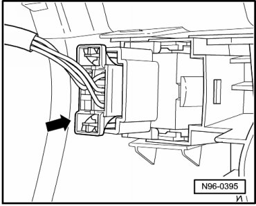
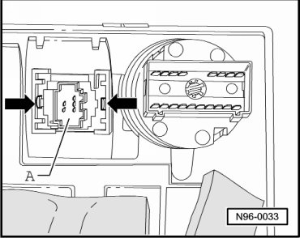

Dimmer Switch: Service and Repair
Instrument Panel Lamps and Switches
Headlamp Adjuster and Instrument Panel Illumination Dimmer Switch
• Headlamp Adjuster (E102) and Instrument Panel Light Dimmer Switch (E20) comprise one component.
Removing
- Switch off ignition, switch off all electrical consumers and remove ignition key.
- Remove instrument cluster trim on driver side
- Release and disconnect the connector - arrow -.

- Compress side retaining straps at Headlamp Adjuster (E102) and Instrument Panel Light Dimmer Switch (E20) - arrows - so that retaining tabs disengage.

- Remove Headlamp Adjuster (E102) and Instrument Panel Light Dimmer Switch (E20) - A - toward rear out of installation frame in instrument cluster trim.
Installing
Install in reverse order of removal.